Lounge chair · steel, ash, bouclé
RØN
A lounge chair with one moving part: a rotating front cylinder.
A lounge chair with one moving part: a rotating front cylinder.
A lounge chair built around one kinetic element. A rotating front cylinder, a welded steel frame, and two ash side profiles that hold the geometry together.
Möbeldesign 2 asked for a lounge chair with a kinetic element that earns its place. Most chairs treat movement as a mechanism you hide. We wanted the moving part to be the thing you see first, without turning the frame into a gimmick.
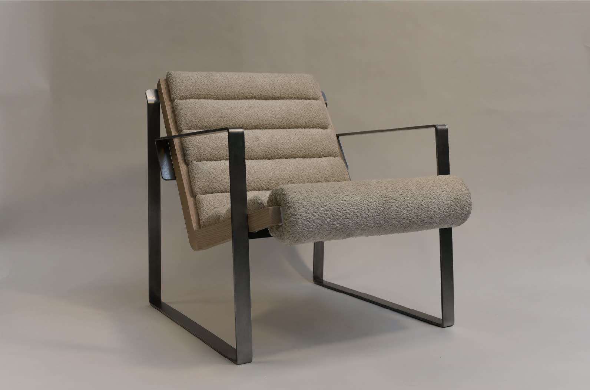
The front cylinder rotates freely. It does not carry the sitter. The steel frame does that. The cylinder gives your legs a soft edge that moves with you, so the chair reads as active without needing a lever or a lock. Two ash boomerang profiles wrap the cushion channels and let the steel frame stay minimal.
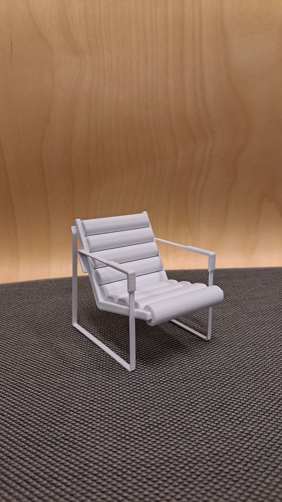
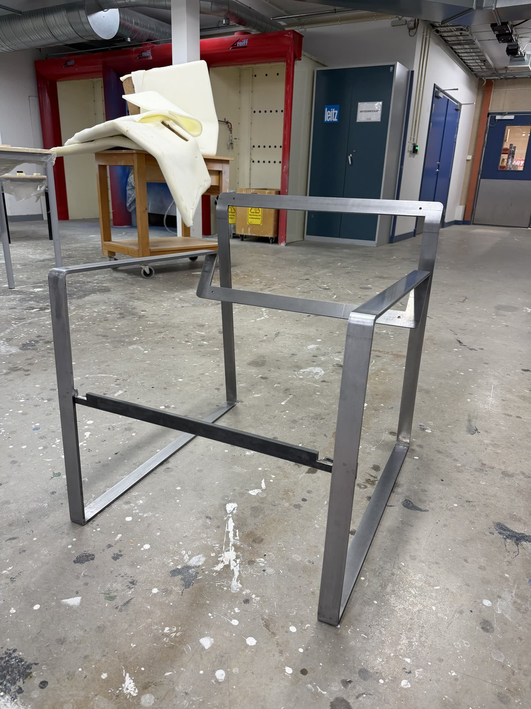
Drag to compare the intended finish with the built prototype. The frame was meant to be powder-coated red. Fabrication lead time on the welded frame ate our schedule, so the final photographed prototype wears raw steel. Honestly, I've come to like it — the raw steel has a transparent, honest feel that the paint would have hidden.
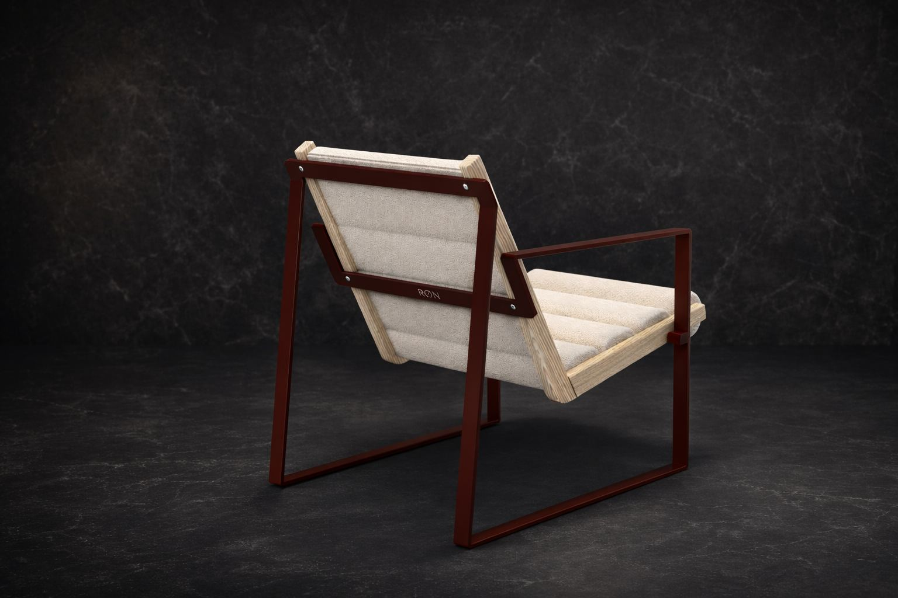

We started with sitting posture. Standard lounge dimensions gave us a baseline, then we adjusted seat height and back angle to land at 72° recline and 435 mm seat height. Once the body was happy, I built the CAD, produced manufacturing drawings with tolerances and weld specs, and worked with an external welder for the steel and a local upholsterer for the cushions.
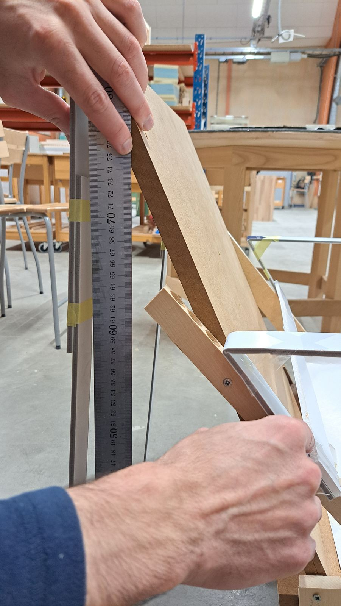
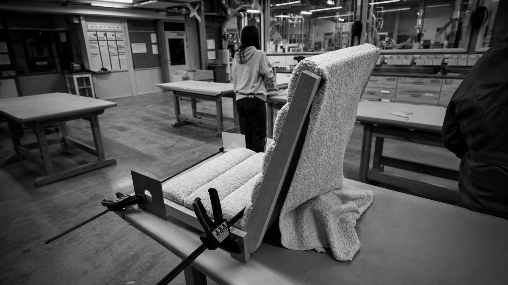
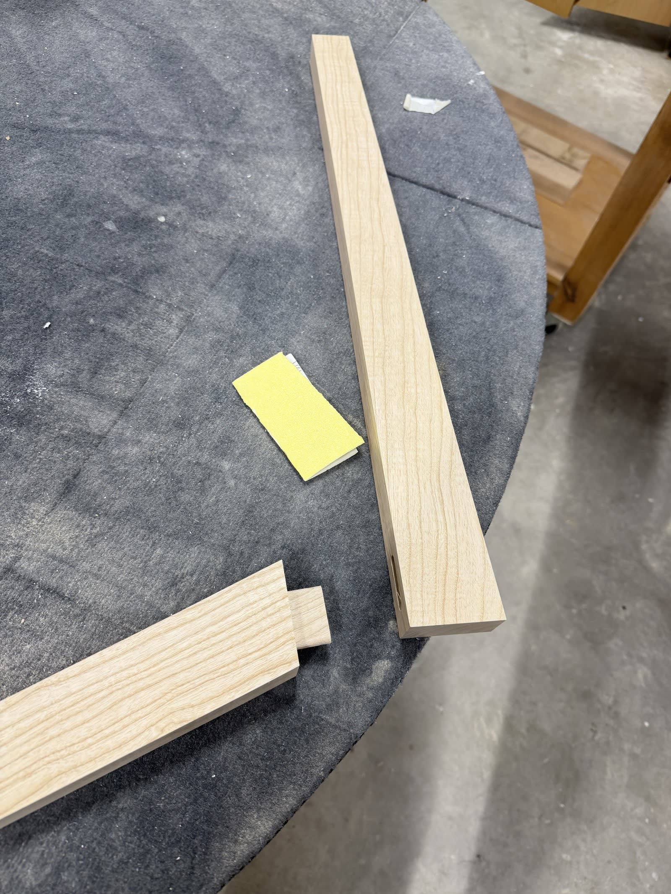
The assembly drawing set the tolerances for the welder. The exploded view documented every fastener, dowel, and 3D-printed cylinder cap, so the build could be repeated by someone who was not in the room.
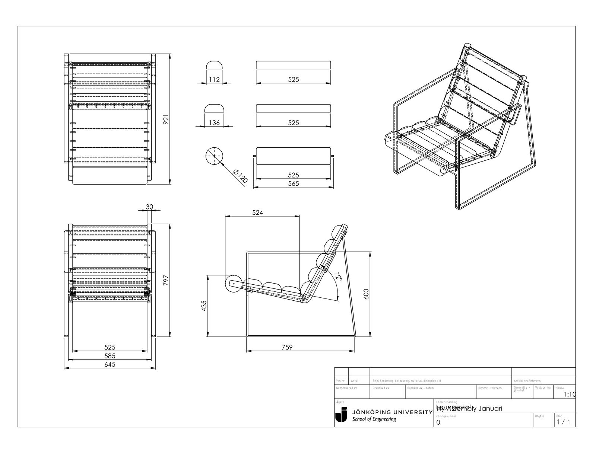
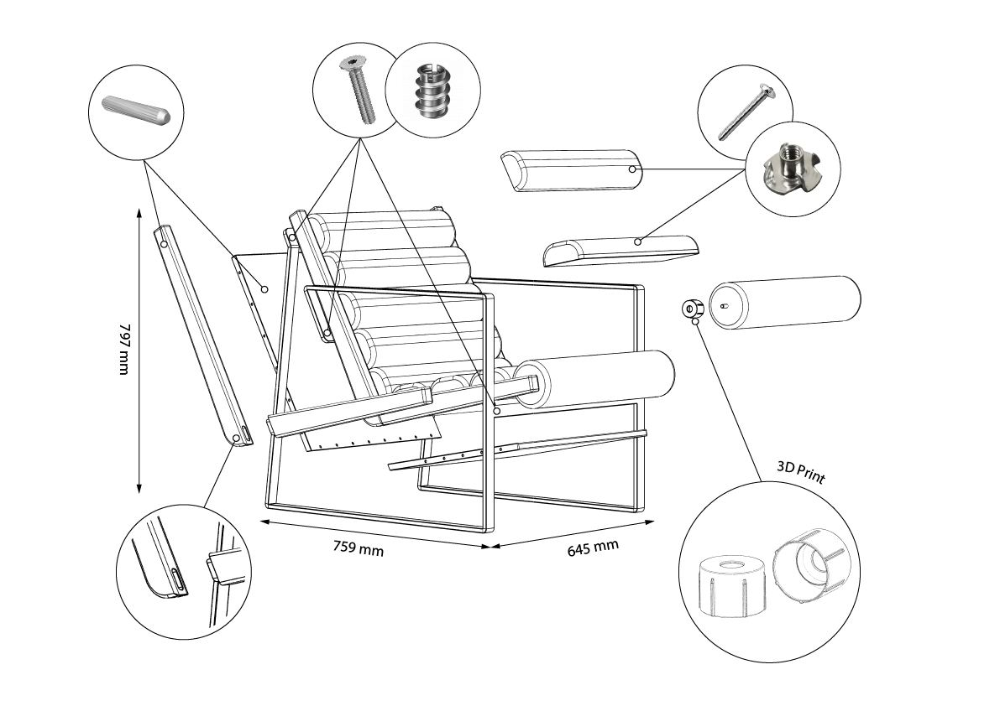
The frame is bolted, not glued. Cushions can be re-upholstered and swapped. Steel and ash both outlast a first owner. Padding is Nevotex Polytex Mix, offcut material that would otherwise be waste. Fabric is OEKO-TEX certified, PFAS-free. Upholstery and welding both done by local Swedish suppliers.
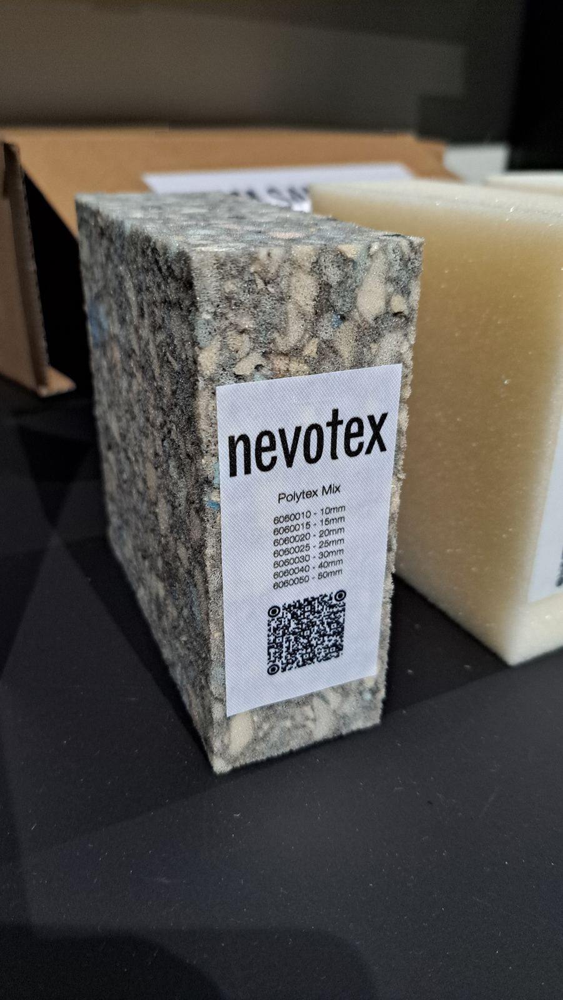
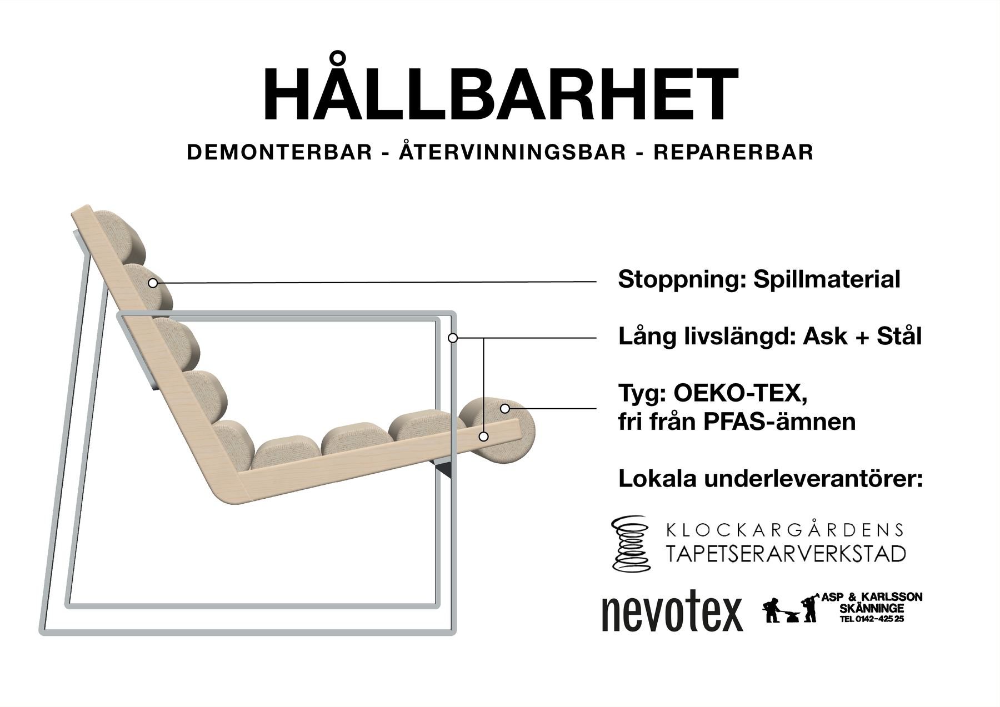
The rotating cylinder does what it was meant to do. It stays out of the load path, and it reads as intent instead of decoration the moment you sit down.
The welded steel construction came out heavier than it needed to be. Next iteration, I would explore thinner section profiles or a hybrid frame to lose weight without losing the geometry that makes RØN read the way it does.